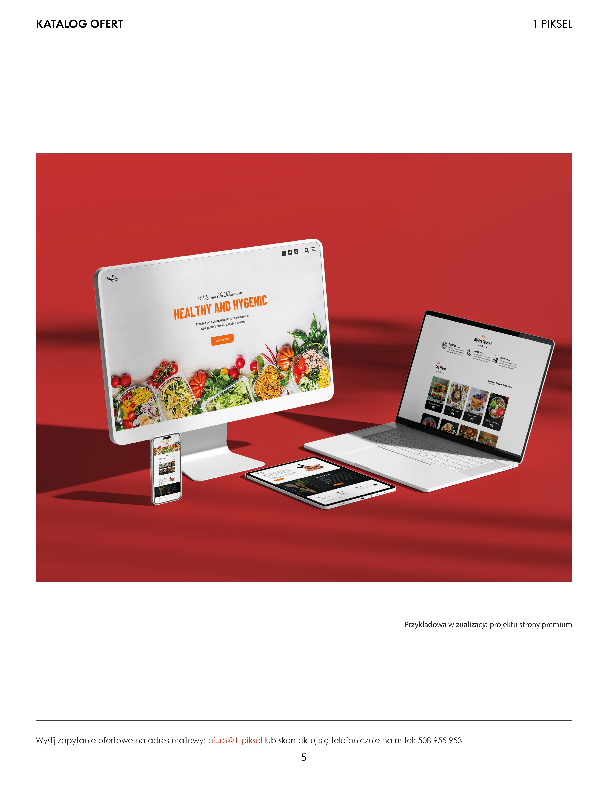
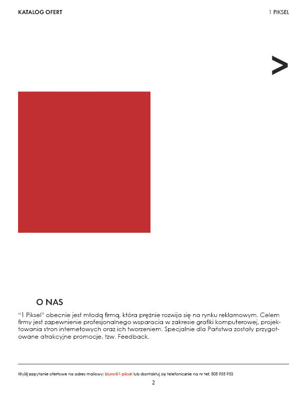
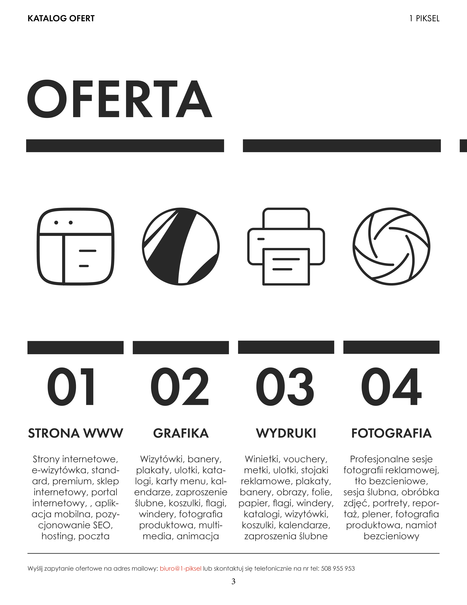
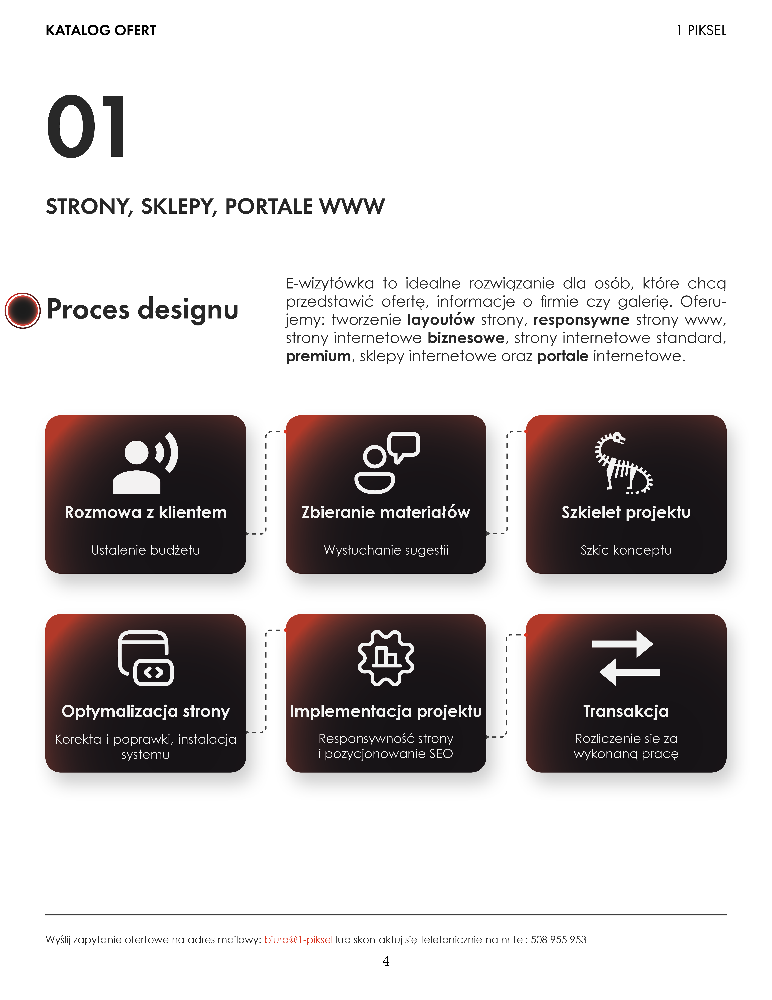
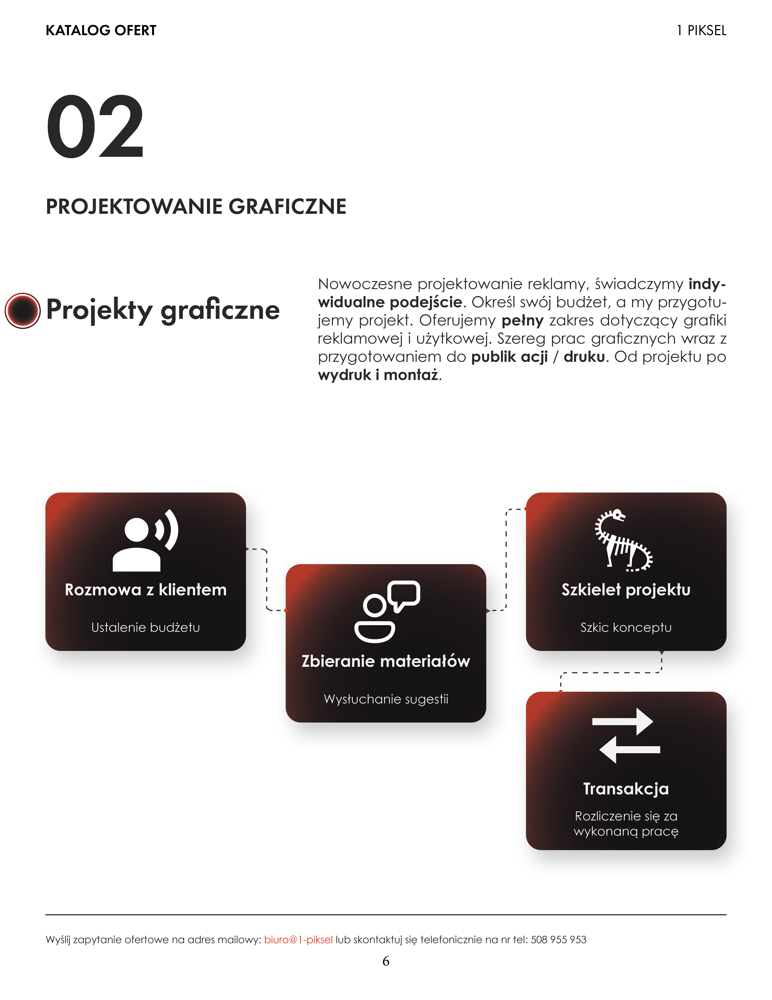
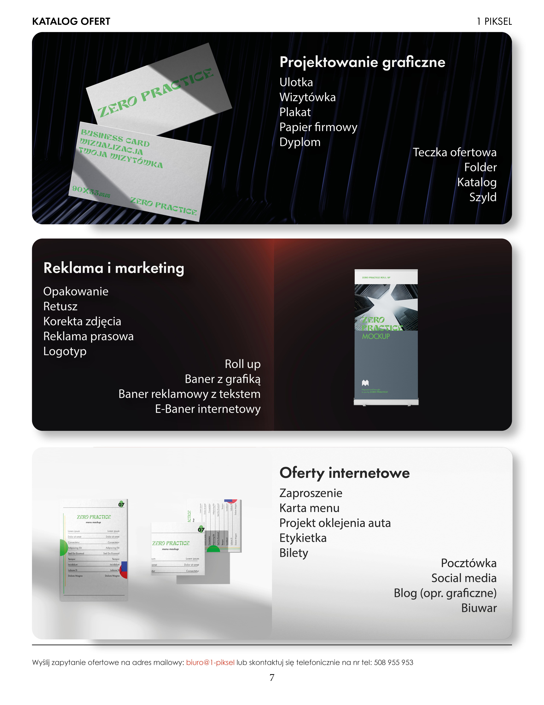
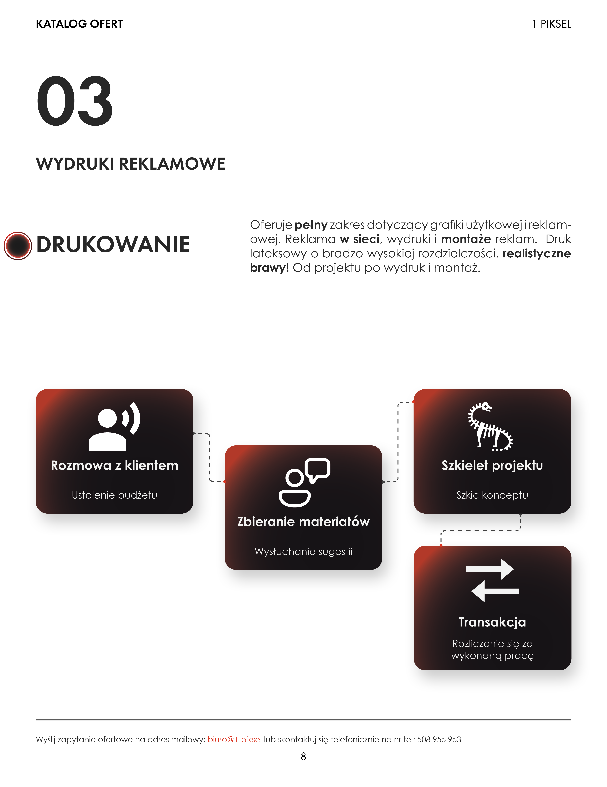
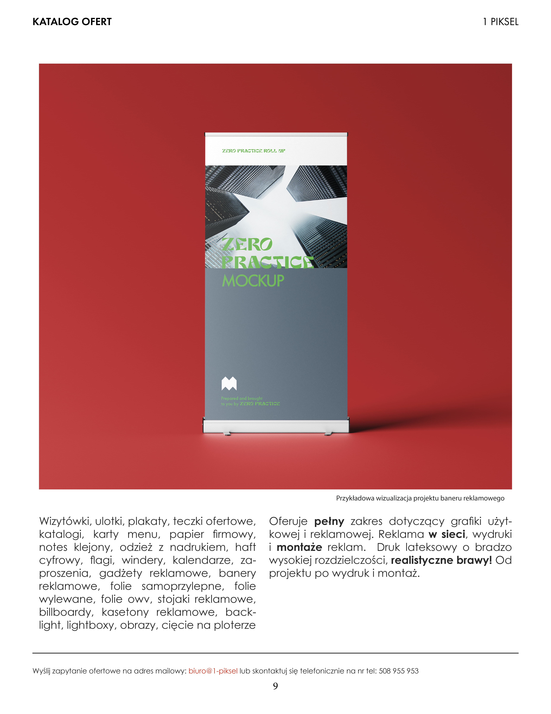
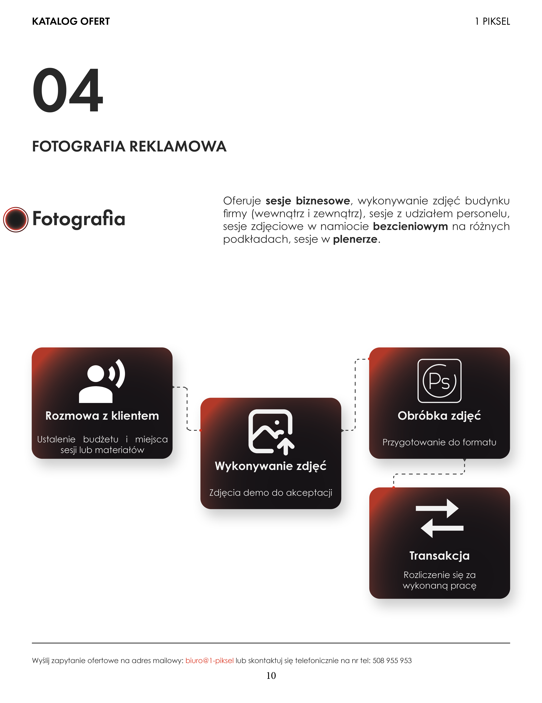
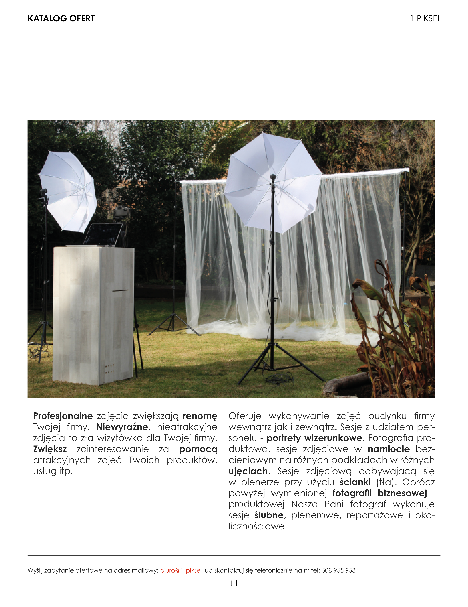

Kompleksowy katalog usług dla studia graficzno-reklamowego. Od layoutu po druk, projekt który porządkuje ofertę i buduje wizerunek profesjonalnej marki.
Studio 1 Piksel to młoda firma reklamowa z ambicjami. Działalność opiera się na czterech filarach - stronach www, projektowaniu graficznym, wydrukach reklamowych i fotografii biznesowej.
Zadaniem było stworzenie spójnego, drukowanego katalogu ofert, który w przejrzysty sposób zaprezentuje wszystkie usługi potencjalnym klientom. Dokument miał wyglądać profesjonalnie, ale też wyróżniać się na tle konkurencji.
Kluczowe wyzwanie: przedstawić cztery różne kategorie usług z ich procesami w jednym spójnym dokumencie - tak, żeby klient rozumiał czego się spodziewać na każdym etapie współpracy.



Minimalistyczna czarno-biała baza z akcentem głębokiej czerwieni. Czerwień pojawia się w gradientach kart procesowych - energetyczna, ale nieagresywna. Na białym tle wywołuje efekt premium.
Kontrast między masywną czarną numeracją (01, 02, 03...) a delikatnym body textem tworzy rytm. Czytelność ponad ozdobność - katalog B2B musi być funkcjonalny.
Każda z czterech usług ma własny diagram procesu. Karty z gradientem czerń – czerwień i białymi ikonami tworzą spójny, rozpoznawalny element systemu. Klient widząc diagram wie: "wiem na co się piszę".






Katalog B2B to narzędzie sprzedażowe, nie portfolio. Typograficzna hierarchia - duże numery działów, boldowane słowa kluczowe, diagram procesu - prowadzi klienta przez dokument zanim zdąży go zamknąć.
Ten sam schemat procesu pojawia się w każdym dziale. Konsekwencja to profesjonalizm. Klient rozumie strukturę po pierwszej stronie i nie musi się przyzwyczajać od nowa.
Biały papier to nie tło - to przestrzeń oddechowa. Duże marginesy i celowe puste obszary sprawiają, że dokument wydaje się droższy i bardziej przemyślany. Zaprojektowana pustka równa się zaufanie.